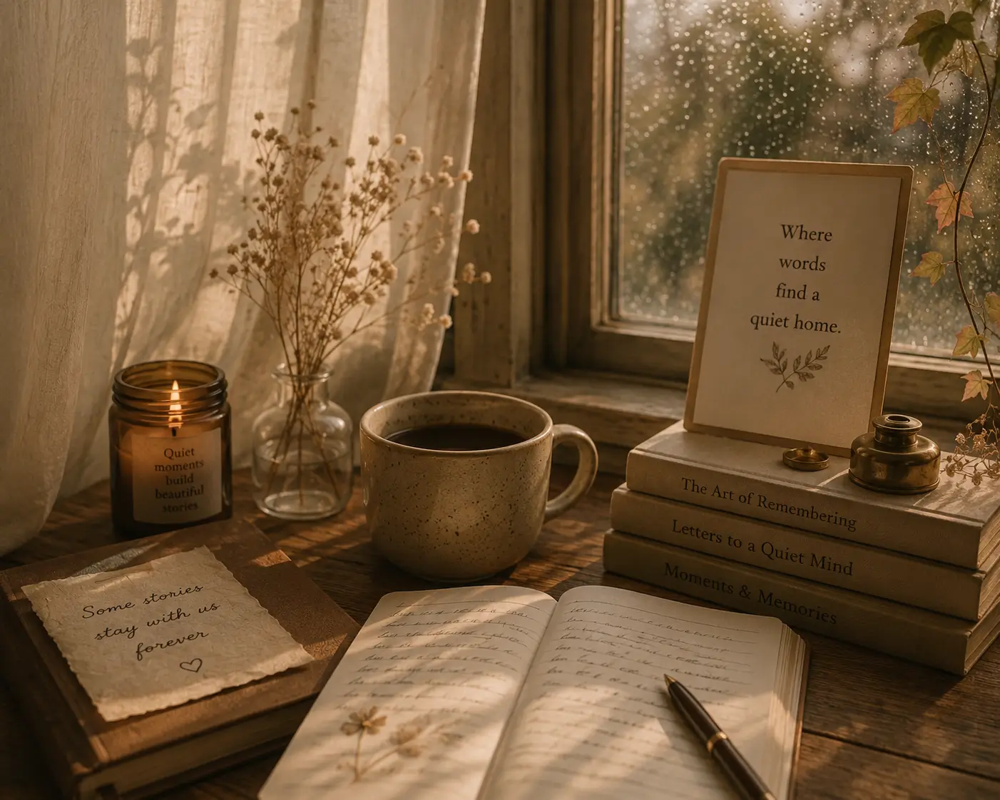
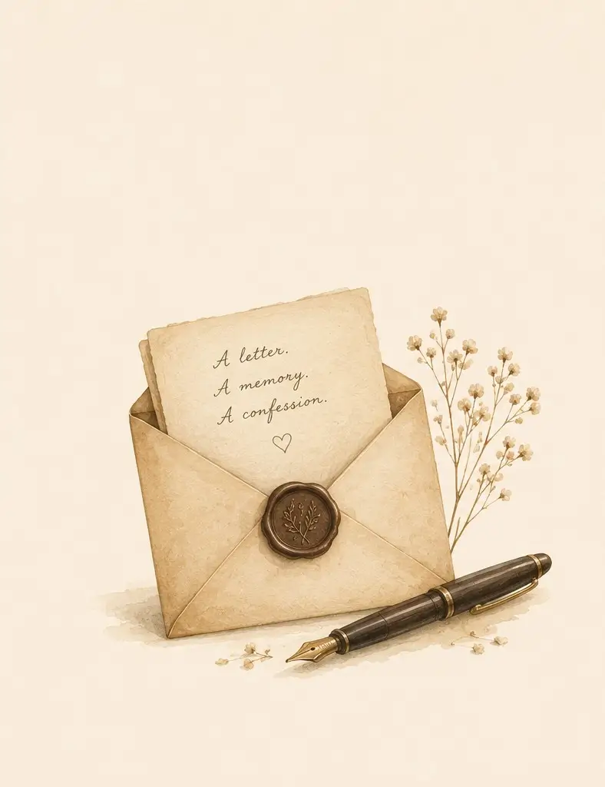
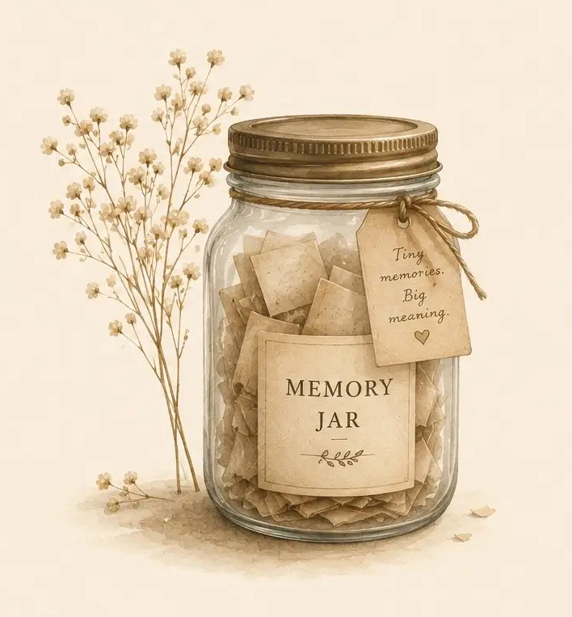

Today's Daily
The First Rain
A small memory. A quiet feeling. Something you'll carry for the rest of your life.
THE SOFT COLUMN
Where words find a quiet home.
The Soft Column is a home for stories that stay with us long after we'vefinished reading. Essays,letters,tiny memories and quiet voices gathered in one place.

A small memory. A quiet feeling. Something you'll carry for the rest of your life.

Share your sweet memories in the conversation with the world.
 TSC ISSUE 001
TSC ISSUE 001
A collection of stories that explore the quiet moments of life, from the first rain to the memories that stay with us forever.
Read More TSC ISSUE 002
TSC ISSUE 002
A journey through the serene landscapes of our minds, where every thought and feeling finds its place in the quiet corners of our hearts.
Read More TSC ISSUE 003
TSC ISSUE 003
Discover the untold stories that lie beneath the surface, waiting to be uncovered and shared with those who seek the beauty in the quiet moments of life.
Read More
@john
See their column

@second
See their column

@third
See their column

@fourth
See their column
A letter. A memory. A confession. Send it anonymously. We read them with care.

Send a LetterTiny Memories. Big Meaning. Share something in small sentences.

Send a MemoryHow are you feeling today? We will help you find the right story for you.
Every day has it's own little ritual. Here's what we have planned for this week.
TSC Daily
A Tiny Memory
A Quiet Question
Frame and Feeling
TSC Issue
Community Story
A Letter
A collection of lines that stayed with us. A few words that made us feel something.
"The first rain always smells like home."
- Churchill (IN by churchill himself)
 Nostalgic
Nostalgic
 Hopeful
Hopeful
 Peaceful
Peaceful
 Surprize Me
Surprize Me